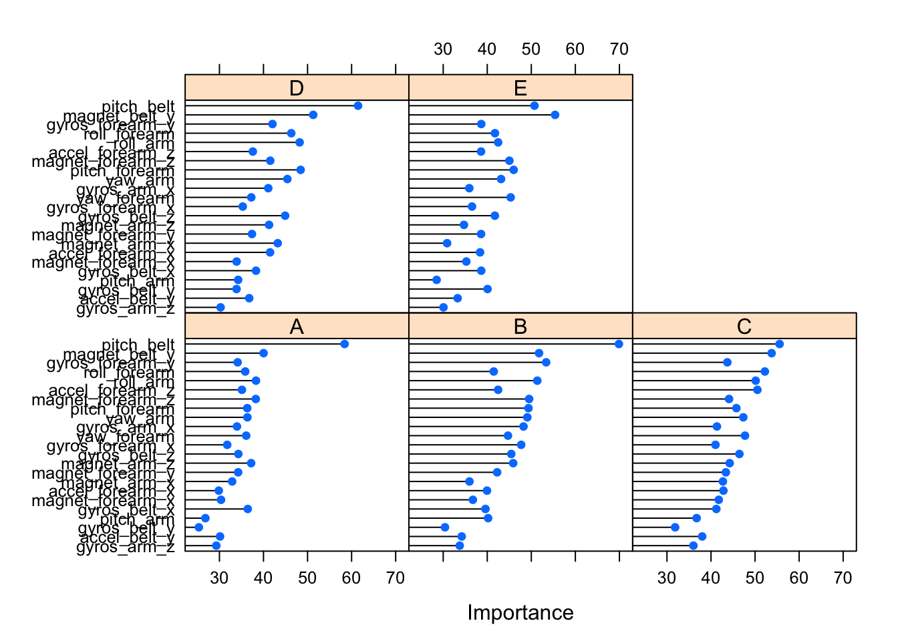

The goal of this study is to predict the manner in which a group of subjects performed various weight lifting exercises based on readings collected from devices equiped with an accelerometer, a gyroscope and a magnetometer. A predictive model is built in R code using observations collected from six male participants aged between 20-28 years, with little weight lifting experience.
This report will describe:
A report on our R environment is presented to assist others in reproducing and validating the models on other similarly equipped systems.
library(lattice)
library(grid)
library(ggplot2)
library(randomForest)
library(e1071)
library(caret)
library(mlbench)
library(parallel)
library(doMC)
# Set up some variabiles for reproducibility / inspection
use.multicore <- TRUE
seed.value <- 8675309
set.seed(seed.value)
save.environment <- "assignment.RData"
si <- sessionInfo()
print(si)## R version 3.1.3 (2015-03-09)
## Platform: x86_64-apple-darwin13.4.0 (64-bit)
## Running under: OS X 10.10.2 (Yosemite)
##
## locale:
## [1] en_US.UTF-8/en_US.UTF-8/en_US.UTF-8/C/en_US.UTF-8/en_US.UTF-8
##
## attached base packages:
## [1] parallel grid stats graphics grDevices utils datasets
## [8] methods base
##
## other attached packages:
## [1] doMC_1.3.3 iterators_1.0.7 foreach_1.4.2
## [4] mlbench_2.1-1 caret_6.0-41 e1071_1.6-4
## [7] randomForest_4.6-10 ggplot2_0.9.3.1 lattice_0.20-30
##
## loaded via a namespace (and not attached):
## [1] BradleyTerry2_1.0-6 brglm_0.5-9 car_2.0-25
## [4] class_7.3-12 codetools_0.2-10 colorspace_1.2-6
## [7] digest_0.6.8 drat_0.0.3 evaluate_0.5.5
## [10] formatR_1.1 gtable_0.1.2 gtools_3.4.1
## [13] htmltools_0.2.6 knitr_1.9 lme4_1.1-7
## [16] MASS_7.3-39 Matrix_1.1-5 mgcv_1.8-5
## [19] minqa_1.2.4 munsell_0.4.2 nlme_3.1-120
## [22] nloptr_1.0.4 nnet_7.3-9 pbkrtest_0.4-2
## [25] plyr_1.8.1 proto_0.3-10 quantreg_5.11
## [28] Rcpp_0.11.5 reshape2_1.4.1 rmarkdown_0.5.1
## [31] scales_0.2.4 SparseM_1.6 splines_3.1.3
## [34] stringr_0.6.2 tools_3.1.3 yaml_2.1.13# Use multiple cores if possible, this speeds up processing 3-4x
if (use.multicore) {
cores <- detectCores()
# Save one core for user functions
if (cores > 2) {
registerDoMC(cores = ifelse(cores > 3, cores - 2, 2))
}
}
# For development only, load previously saved model
# Turn this on only after you've used knitr once on this .Rmd file
development <- TRUE
if (development) {
load(save.environment)
development <- TRUE
}The original source data can be downloaded from the maintained by the Groupware@LES team.
# training & testing: https://d396qusza40orc.cloudfront.net/predmachlearn/pml-training.csv
modeling.dat <- read.csv(file = "pml-training.csv")
# validating: https://d396qusza40orc.cloudfront.net/predmachlearn/pml-testing.csv
validating.dat <- read.csv(file = "pml-testing.csv") In the original study, a “Best First” strategy based on backtracking was used to select 17 features in the data set.
In our study, instead we rely only on the original features for which we have complete cases. We remove extracted features such as the calculated kurtosis, mean, and other statistics derived from the original device measurements.
Then, we use the findCorrelation() method from the caret package to remove features that are redundant using a method suggested by Jason Brownlee. By eliminating highly correlated features we hope to reduce the processing time and increase the reliability of the model.
In an earlier experiment, we did not test for highly correlated features which greatly increased processing time by ten-fold.
# Keep only the direct measurements, not the derived features like kurtosis or mean
measures <- c("classe",
grep(x = names(modeling.dat),
pattern = "arm|forearm|dumbell|belt",
value = TRUE))
exclusions <- grep(x = measures,
pattern = "kurtosis|skewness|max|min|avg|var|stddev|total|amplitude")
features <- measures[-exclusions]
inTrain <- createDataPartition(y = modeling.dat$classe, p = 0.75, list = FALSE)
training <- modeling.dat[inTrain, features]
testing <- modeling.dat[-inTrain, features]
validating <- validating.dat[, features[-1]]
# Next, remove the highly correlated features
`%ni%` <- Negate(`%in%`)
correlationMatrix <- cor(training[,-1])
highlyCorrelated <- findCorrelation(correlationMatrix, cutoff=0.7)
to.remove <- features[-1][highlyCorrelated]
training <- subset(training, select = names(training) %ni% to.remove)
testing <- subset(testing, select = names(testing) %ni% to.remove)
validating <- subset(validating, select = names(validating) %ni% to.remove)First, check to make sure we have complete cases, as random forest does not do well with missing values:
Next, we’ll center and scale the data using the preProcess directive as we build the model. To avoid over-fitting as much as possible, we employ a 10-fold cross validation procedure using the trainControl() method from the caret package.
# Use 10-fold cross validation
# This takes a long time!
if (!exists("modFit")) {
modFit <- train(classe ~ .,
method = "rf",
data = training,
preProcess = c("center", "scale"),
trControl = trainControl(method = "repeatedcv",
number = 10,
repeats = 3),
importance = TRUE)
}
print(modFit)## Random Forest
##
## 14718 samples
## 23 predictor
## 5 classes: 'A', 'B', 'C', 'D', 'E'
##
## Pre-processing: centered, scaled
## Resampling: Cross-Validated (10 fold, repeated 3 times)
##
## Summary of sample sizes: 13247, 13247, 13245, 13245, 13246, 13247, ...
##
## Resampling results across tuning parameters:
##
## mtry Accuracy Kappa Accuracy SD Kappa SD
## 2 0.9857092 0.9819209 0.002308566 0.002922976
## 12 0.9823793 0.9777099 0.004117652 0.005210208
## 23 0.9747467 0.9680538 0.004818513 0.006095248
##
## Accuracy was used to select the optimal model using the largest value.
## The final value used for the model was mtry = 2.importance <- varImp(modFit, scale = FALSE)
answers.test <- predict(modFit, testing)
cm.test <- confusionMatrix(answers.test, testing$classe)
accuracy.test <- cm.test$overall[c("Accuracy")]To estimate the out of sample error, we build a confusion matrix, comparing our predicted classes versus the actual classes known in the testing data.
The overall accuracy in our model is 98.55%. The confusion matrix, below, shows the trained model is able to achieve greater than 97% positive predictive value and over 99% negative predictive value on all classes within a 95% confidence interval of (98.18%, 98.87%).
Looking at the overall importance of each variable in our classification model, we can see that the pitch_belt measurement plays a signficant role in each outcome, especially in Class A where each subject performs the Unilateral Dumbbell Biceps Curl without making any mistakes. Measurements from the magnetometer play a greater role when subjects throw their hips too much to the front (Class E).
plot(importance)
print(cm.test)## Confusion Matrix and Statistics
##
## Reference
## Prediction A B C D E
## A 1388 10 1 0 0
## B 6 931 23 0 0
## C 0 5 824 12 0
## D 1 1 6 791 2
## E 0 2 1 1 899
##
## Overall Statistics
##
## Accuracy : 0.9855
## 95% CI : (0.9818, 0.9887)
## No Information Rate : 0.2845
## P-Value [Acc > NIR] : < 2.2e-16
##
## Kappa : 0.9817
## Mcnemar's Test P-Value : NA
##
## Statistics by Class:
##
## Class: A Class: B Class: C Class: D Class: E
## Sensitivity 0.9950 0.9810 0.9637 0.9838 0.9978
## Specificity 0.9969 0.9927 0.9958 0.9976 0.9990
## Pos Pred Value 0.9921 0.9698 0.9798 0.9875 0.9956
## Neg Pred Value 0.9980 0.9954 0.9924 0.9968 0.9995
## Prevalence 0.2845 0.1935 0.1743 0.1639 0.1837
## Detection Rate 0.2830 0.1898 0.1680 0.1613 0.1833
## Detection Prevalence 0.2853 0.1958 0.1715 0.1633 0.1841
## Balanced Accuracy 0.9959 0.9869 0.9798 0.9907 0.9984With high confidence that our model is properly trained and over-fitting is under control, we run the model against the validation data for submission to Coursera. We save our answers in files that can be uploaded per the course submission instructions.
# From coursera submission instructions
# https://class.coursera.org/predmachlearn-013/assignment/view?assignment_id=5
pml_write_files = function(x) {
n = length(x)
for(i in 1:n){
filename = paste0("problem_id_",i,".txt")
write.table(x[i],file=filename,quote=FALSE,row.names=FALSE,col.names=FALSE)
}
}
answers <- predict(modFit, validating)
pml_write_files(answers)If you use knitr to build the models yourself, you can inspect the models directly by loading the saved data into your own R environment. Use the following code to open the saved environment:
load("assignment.RData")It has been said that one of the big downsides to using machine learning models is that they are not very interpretable. The Random Forests algorithm effectively produces a large number of decision trees which then are used to make predictions.
To see examples of these decision rules, load the saved environment into your session using the code above, then execute the code below. There are a total of 500 trees in the final model.
print.rule(modFit$finalModel, 1)Now, we’ll show the results of running predict() on our validation set. To protect other Coursera students from violating the Honor Code, we have suppressed the answers in the default output.
To see the final answers, set development <- TRUE in the code above and run the knitr command yourself to see the results inline.